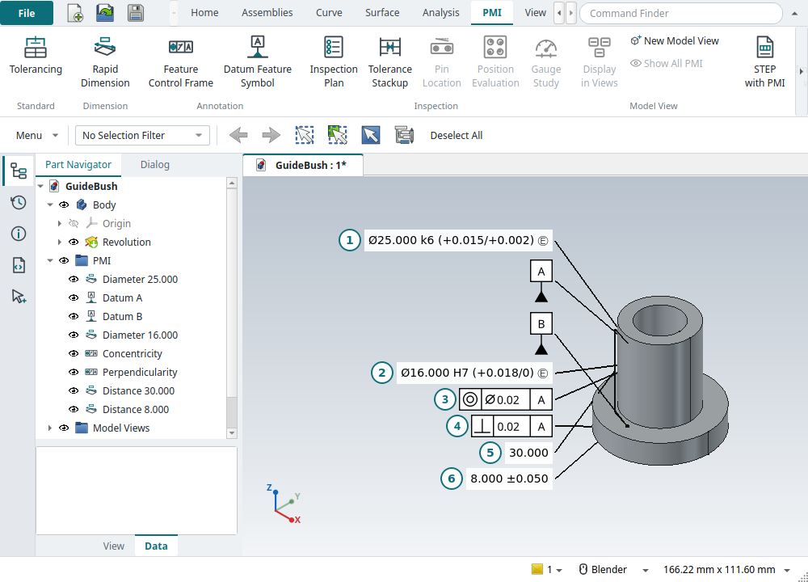
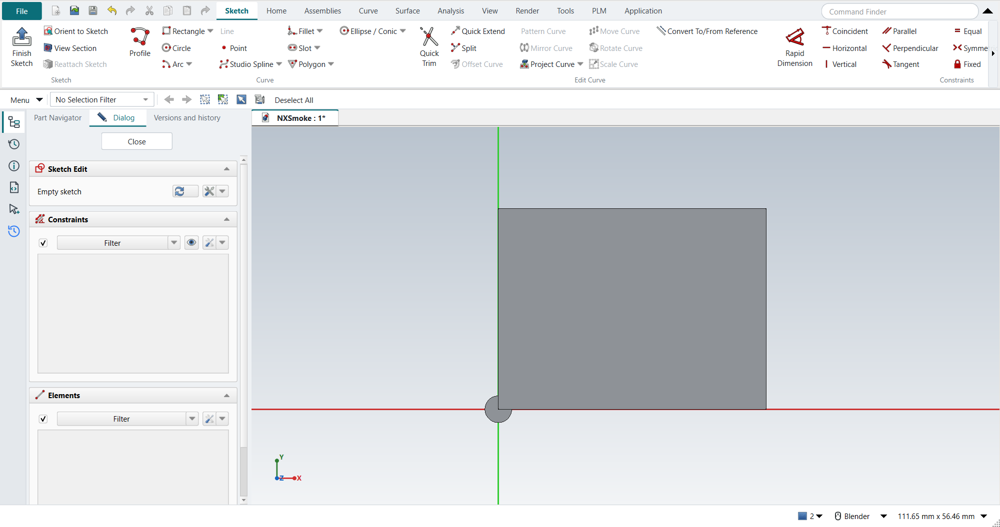
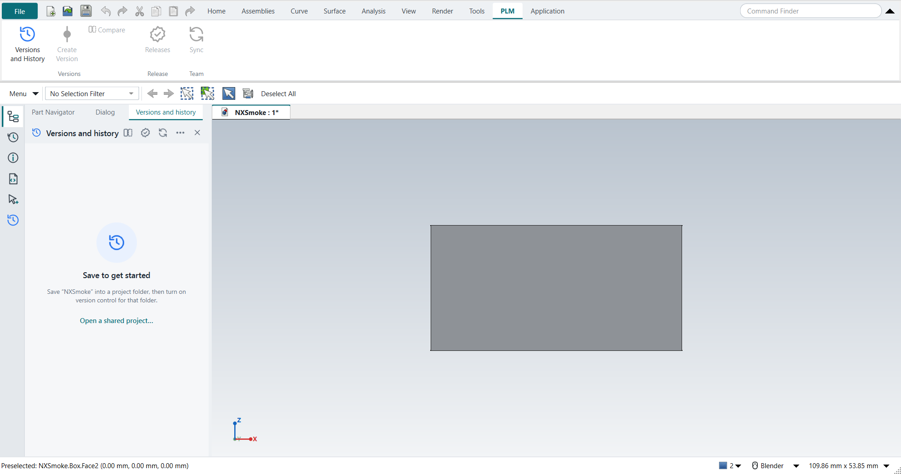

FreeCAD NX-Style
FreeCAD NX-Style runs your normal, unmodified FreeCAD with a user interface laid out and behaving like Siemens NX: the ribbon, the Top Border Bar and the Resource Bar, NX’s mouse buttons and keyboard shortcuts, and NX’s command names. There is no fork and no patch, and your usual FreeCAD settings are never touched.

-
Install
Get FreeCAD 1.0 or newer, clone the project and start it with one command. -
Quick start
Sketch and extrude your first part the NX way in five minutes. -
Tutorials
Textbook exercises and precision-engineering work, step by step, checked by the replay. -
PMI to ISO GPS
Fits, the envelope, ISO 2768 and geometrical tolerances in the model; drawings that inherit them. -
Tolerance analysis
Stack-ups measured from the model: worst case, RSS, Monte Carlo. -
Clearance and volume claims
NX’s Assembly Clearance and space reservations for system layouts. -
Sheet Metal
Tabs, flanges and flat patterns, with the bend allowance worked out. -
Pin location
Fit, shift, rotation and pointing error of a part on two dowel pins. -
Inspection
Composite position evaluated from CMM data; gauge studies, TUR and guard bands. -
Shortcuts
All 65 NX key bindings and what each one does here.
What you get
| In NX | In FreeCAD NX-Style |
|---|---|
Ribbon with File, Home, Assemblies, Curve, Surface, Analysis, View, Render, Tools, Application |
The same tabs and groups with NX’s command names (Extrude, Edge Blend, Pattern Feature, WAVE Linker, …), driving FreeCAD’s real commands. Tooltips also give the FreeCAD name. See The user interface. |
Quick Access Toolbar, Command Finder |
Left and right of the tab row. The finder searches NX and FreeCAD names and tells you where each command lives. |
Top Border Bar |
Menu button (every FreeCAD menu), a Type Filter that really restricts what you can pick, and selection tools. |
Resource Bar |
Part Navigator, History, Information, Journal (Python console), Selection, and Versions and history. |
Applications |
Modeling, Drafting, Assemblies, Shape Studio, Pre/Post, Manufacturing and more, each FreeCAD workbench behind an NX application. |
Mouse |
MB2 rotates, Shift+MB2 or MB2+MB3 pans, Ctrl+MB2 or MB1+MB2 zooms, MB2 click is OK, hold MB3 for the radial menu. See Mouse and view control. |
Keyboard |
All 65 bindings from NXtips, each one checked by the self-test. See Keyboard shortcuts. |
Algorithmic Modeling |
Katydid: a node-based design canvas with a live preview, baked into ordinary FreeCAD objects. |
Teamcenter |
Strata: every save recorded, versions, workspaces, compare, releases, sync. |
Drafting GD&T |
Feature Control Frame and Datum Feature Symbol dialogs that FreeCAD does not have. See Drafting. |
PMI tab, Inherit PMI |
3D PMI to ISO GPS (or ASME Y14.5): ISO 286 fits, the envelope, ISO 2768 general tolerances, datums, frames, an inspection plan with checks and gauge sizes; drawings inherit it. See PMI and technical product documentation. |
Export STEP with PMI |
PMI › STEP with PMI: STEP AP242 with the semantic PMI (datums, sizes and locations with their ISO 286 classes, geometrical tolerances). See PMI and technical product documentation. |
Tolerance Stackup Validation |
Tolerance Stackup: measured from the model or from PMI; worst case, RSS, adjusted RSS, MRSS, Monte Carlo. Pin Location for parts on two dowel pins. Position Evaluation and Gauge Study for measured parts and gauges. |
Populate Title Block, revision table |
Populate Title Block: the ISO 7200 title block from the part’s release, the revision block from its release history. |
Sheet Metal |
Ctrl+Shift+M: FreeCAD’s SheetMetal add-on (bundled) with NX’s names, Sheet Metal Preferences and Flat Pattern. See Sheet Metal. |
Laser Cut (not in NX) |
Flat panels joined by tabs and slots, cross halvings and living hinges, laid flat for the cutter: the LCInterlocking add-on (bundled). See Laser Cut. |
Assembly Clearance, Simple Interference |
The same four kinds of interference and the Clearance Browser; plus volume claims. See Assembly clearance and volume claims. |
Publish Technical Data Package |
Publish Release Package: the released part with a checksummed manifest. |
Units |
Metric by default (mm, kg). |
How it stays out of your normal FreeCAD
FreeCAD reads its user folders from three environment variables, FREECAD_USER_HOME, FREECAD_USER_DATA and FREECAD_USER_TEMP.
The launcher points them at a private NX profile and loads the NX-Style module from the project folder with FreeCAD’s -M switch.
Nothing is installed into FreeCAD or into your normal FreeCAD settings folder, and the launcher refuses any profile path that overlaps it.
Delete the profile folder (or start with --reset-profile) and it is gone.
The details are in installation.adoc#profile.
What it is not
It is not identical to NX, and cannot be. Icons, feature dialogs and modelling semantics stay FreeCAD’s: a subtracting extrude is FreeCAD’s Pocket, and there is no synchronous modelling beyond Defeaturing. What differs from NX lists what works differently, and Known issues what FreeCAD itself cannot do yet.
A few pictures



